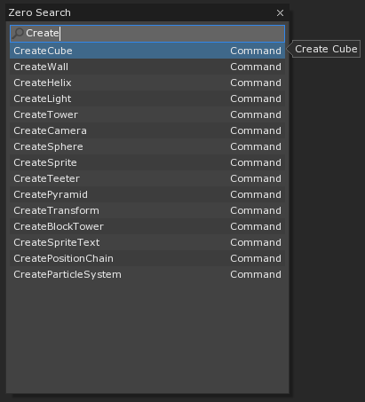

Game Objects
Game objects are pieces of interactive content.
Objects in the Zero Engine (game object compositions, or Cogs) are not defined using classes. Instead they are collections of components, each of which provide a certain functionality to the object. A component can be data, behavior, and/or a link to a system. For example, an object called “Ball” might be a composition that includes the Transform (position, rotation, etc.), Model (geometry, textures, etc.), Rigid Body (movement), and Collider (shape, collision, etc.) components, while a “Main Camera” object would include Transform, Controller (mouse or keyboard input, etc.), and Camera (field of view, zoom, etc.). Or you could create a “Ball Camera,” with Transform, Model, Rigid Body, Collider, Controller, and Camera.
One of the keys to working with a component based engine is to think of objects in terms of what they do, not what they are. If you have a hospital, a soldier, and a medic, the hospital and the medic have a healing component, while the soldier and the medic have a mobility component, but you don’t need to group one as a building and the other two as infantry. All the game engine cares about is what the object can do. You might see a ball and a car as different types of things, but to the game engine they are both objects composed of Transform, Model, Rigid Body and Collider. They have the same functionality: the only difference is their data.
Creating a Cog
The easiest way to start creating your own cog is to start with a command that generates one for you, e.g. CreateSprite, CreateCube, CreateTransform, etc. These create cogs that you can then customize by adding or removing components and setting their properties in the Properties Window.

Copy & Paste
When creating a new object, you can always copy and paste other objects and alter their properties from there. The copy and paste functionality places the same information on the clipboard that it does when saving. Here is what we see when copy our Sprite generated from CreateSprite into a text editor:
Selection selection =
{
Cog =
{
LinkId =
{
uint Id = 1,
},
Named =
{
string Name = "Sprite",
},
Transform =
{
Vec3 Translation = [1.97043, 6.45429, 0],
Vec3 Scale = [1, 1, 1],
Quat Rotation = [0, 0, 0, 1],
},
Sprite =
{
string SpriteSource = "5275aa4d802dd6dc:Square",
bool FlipX = false,
bool FlipY = false,
Vec4 Color = [1, 1, 1, 1],
bool Visible = true,
bool OnTop = false,
bool AnimationActive = true,
float AnimationSpeed = 1,
uint StartFrame = 0,
BlendMode BlendMode = Alpha,
SpriteGeometryMode GeometryMode = ZPlane,
},
},
},
This code can be copy and pasted into other projects. This works because, unless you manually remove them, you have all the default resources necessary to create this object. In many cases this won’t work with your cogs because the copied object references resources that differ between your destination project and the source project.